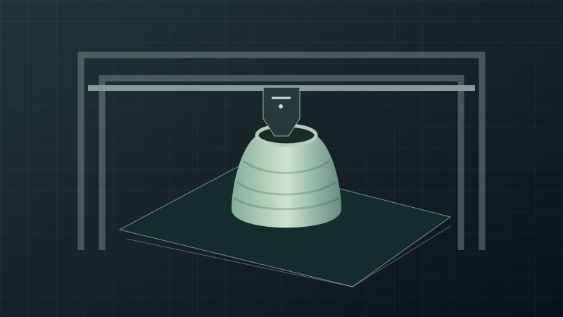

01 / THE ROOM
See the job, not just the number.
Progress, temperatures and optional camera feeds sit together. Expand job details, filter a larger fleet, or settle into Focus view.
Walk around the room →LOCAL SOFTWARE / OPEN WORKSHOP
A calm place for your printers, materials and progress. Connect your Moonraker fleet, bring your Spoolman inventory, and keep the workshop close.
Self-hosted · MIT licensed · Moonraker / Klipper first
Public preview · hardware qualification is documented

One workspace for a small studio or a growing room. Your existing printer interfaces and inventory stay part of the setup.
01 / THE ROOM
Progress, temperatures and optional camera feeds sit together. Expand job details, filter a larger fleet, or settle into Focus view.
Walk around the room →02 / THE MATERIALS
Connect Spoolman, explore your colors and find the material you already have. Connection changes keep inventory histories separate.
03 / YOUR SETUP
Add and edit printers, check Moonraker, or review discovery candidates from a subnet you choose. Set your Spoolman API address and browser link independently.
Try simulated settings →COMPATIBILITY, WITHOUT THE GUESSWORK
Support follows the firmware and endpoints your printer exposes. The compatibility guide separates implemented adapters, automated coverage and physical qualification.
Read the full compatibility list →From the first container to a larger fleet, understand how connections, cameras and data fit together.
TAKE A LOOK AROUND
The demo uses fictional devices and inventory. No login, printer access or network scan.
BEFORE YOU START
No. It brings a room-level view to existing Moonraker setups. Your printer's own UI remains the place for its complete machine-specific tools.
Yes. Start with a single profile, add Spoolman or a camera when useful, and add more printers later. Search appears for larger rooms.
No. Printer commands and inventory writes each require an explicit host policy. Physical control actions are not part of the initial hardware qualification.
No. It is a static, isolated simulation with fictional data. Network connections are blocked by its content security policy. Settings edits stay in your browser tab and reset on demand.
The current tool is designed for a trusted local network. It does not include public hosting authentication, TLS termination or per-user roles. The public website and demo are separate from your private install.
It is the saved-profile limit and the size of the simulated fleet tests. The qualified physical installation contains two K2 Plus printers. Qualify performance on your own host and network as you scale.